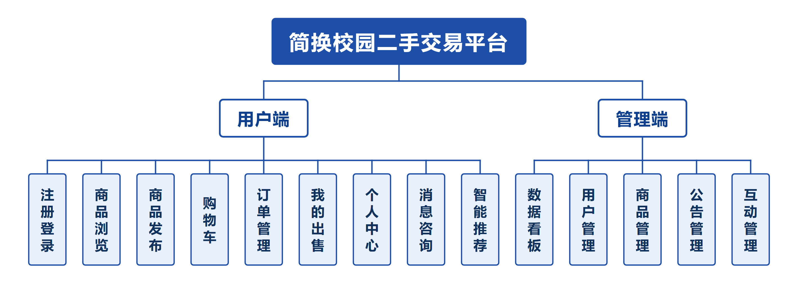
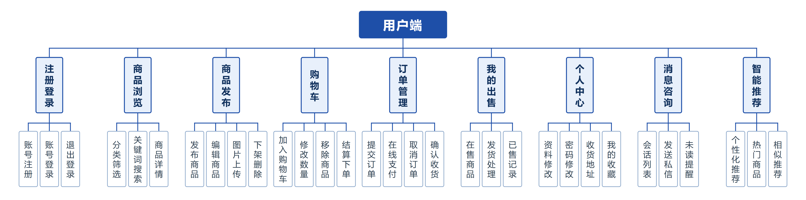
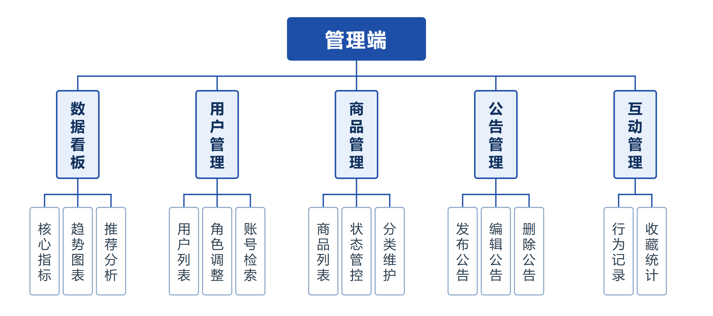

本科毕业设计 · 计算机科学与技术
首页「猜你喜欢」由自实现的 Item-based 协同过滤算出， 每条推荐都说得清为什么推给你；配套从部署到监控告警的完整运维闭环。
校园二手交易长期依赖群聊与表白墙，信息随刷随没、买卖双方匹配效率低。
QQ 群/朋友圈发布的商品几分钟就被新消息冲走，想买时根本搜不到，卖家反复重发。
信息过载：用户不知道自己想要什么，只能靠翻页大海捞针，长尾商品永远无人问津。
卖家不在线就无人应答，议价询问得不到回应，成交率被"回复慢"拖垮。
开放发布必然带来违规信息，缺乏审核机制的校园平台很快就会被垃圾内容淹没。
付款、发货、收货没有状态记录，一旦纠纷无据可查。
刚注册没有任何行为数据，推荐系统无米下锅，首页只能是空荡荡的默认列表。
11 个前端视图 + 11 个业务模块，覆盖完整交易闭环与后台治理。
每条推荐带 reason（"因为你收藏过…"）与 basis（类目依据）。不是黑盒输出，用户一眼看懂推荐逻辑，信任感显著提升。
规则引擎识别九类意图（砍价/询价/配件/库存/成色/配送/面交/致谢/问候），带冷却与每日上限；可选接 LLM。买家不必干等卖家上线。
敏感词过滤在服务端强制接入发布/编辑/私信/昵称，词库与代码分离可运营维护；前端过滤只是体验层，服务端才是真关卡。
5 态流转：待付款 → 已付款 → 已发货 → 已完成，取消为旁路；后端校验合法性，杜绝越级操作。
输入 sj 也能命中"手机"；记录个人搜索历史与全站热搜，支持一键清空。
买家看订单，卖家看"我卖出的"；私信按会话聚合，未读自动标记已读。
后台独立登录体系与路由守卫，可管用户、商品、公告，并查看协同过滤洞察面板。
Vue3 + Element Plus 本地 vendor 引入，无需 npm build，Nginx 直接托管，部署包仅 614 KB。
算法自实现、无付费 API、无云服务账单，全部跑在自建 RHEL 虚拟机上。
按角色拆成用户端与管理端两棵树，共用同一套业务与数据层。三张图为项目文档中的正式插图，点击可看原图。



每一项都写明"为什么选它、放弃了什么"，而不是罗列名词。
| 层面 | 选型 | 为什么选它 | 权衡 / 代价 |
|---|---|---|---|
| 前端框架 | Vue3（免构建） | 渐进式、模板语法直观；免构建方案让部署包极小、无需 Node 构建环境，Nginx 直接托管 | 放弃 SFC 与构建期优化，大型项目不适用 |
| UI 组件 | Element Plus | 组件齐全（表单/表格/对话框），中文文档完善，桌面端后台场景契合 | 包体较大，需要本地 vendor 化 |
| 前端路由 | 自实现 hash 路由 | 免构建环境下无 vue-router；hash 路由无需服务端 rewrite 配合，刷新不 404 | 需自行处理视图切换与守卫 |
| 运行时 | Node.js | 前后端同语言，JSON 处理天然契合；与 Vue 生态一致，学习成本集中 | 单线程 CPU 密集场景受限 |
| Web 框架 | Express 4 | 中间件模型清晰、生态成熟、路由组织灵活，适合 RESTful API 服务 | 需自行组织分层，无强约束 |
| 数据库 | MySQL 8 | 关系模型天然适配订单/商品/用户这类强关联数据；事务保证订单一致性；window function 便于统计 | 需手写迁移脚本与索引优化 |
| 认证 | JWT + bcrypt | 无状态、易横向扩展；密码 bcrypt 加盐哈希存储 | JWT 不可主动撤销，改进方向为 refresh token |
| 推荐算法 | 自实现 Item-based CF | 零成本约束下不调用付费推荐 API；物品相似度稳定可离线计算，适配"物品数 << 用户数"的校园场景 | 物品两两计算复杂度 O(n²·m)，规模扩大需剪枝/LSH |
| 监控 | prom-client + Prometheus 规则 | 标准生态、PromQL 表达力强，可平滑迁移到真实 Prometheus/Alertmanager | 目标机无 root 装不了 Prometheus，故补了用户态守护进程等效实现 |
| 部署 | Nginx + systemd | Nginx 反代/静态托管/分级缓存一体；systemd 提供服务自愈与资源限制 | 单机无高可用，需人工介入恢复 |
前后端分离 + 反向代理分层，运维组件旁路接入，不侵入业务代码。
/api/*^~ /api/ 前缀匹配反代到 3001（避免被静态规则截走）/uploads/Restart=always 自愈从行为数据到推荐理由，五步闭环——这是本项目与普通"管理系统"的分水岭。
用户 × 物品矩阵，行为加权：浏览 1 / 收藏 3 / 加购 4 / 购买 5
加权余弦相似度：对评分绝对值不敏感，只比较偏好方向
历史物品加权向量 × 相似度矩阵，按商品去重累加
无行为数据 → 同类目热门（按加权分排序）填充首页
返回 reason + basis（类目），前端直接展示推荐理由
全部来自真实排查记录——每一个都有现象、根因、解法与收获。
现象：页面全白但无报错线索；node --check 查不出（那只是 JS 语法检查）。
根因与解法：Vue 模板字符串里属性结尾少一个引号，编译期报 Attribute name cannot contain U+0022。解法：写专用模板校验脚本，改完必跑；批量替换只用最小锚点，拒绝大范围正则。
现象：5xx 占比长期偏低，服务真的挂了也告警不出来。
根因与解法：http_requests_total 是累加计数器，直接相除等于统计"开服以来的总量"。解法：改为窗口内增量计算，才反映当前健康度。
收获：指标语义想错，整套监控都是白搭。
现象：本地假 SMTP 服务器测试一切正常，接真实邮箱报 503 Send command HELO/EHLO first。
根因与解法：465 隐式 SSL 分支读完欢迎语就直接 AUTH，漏发 EHLO；假服务器对任何命令都回 250，把协议顺序错误掩盖了。解法：465 分支补发 EHLO，并重跑真实投递验证。
收获：假环境测通 ≠ 线上能跑，验证必须贴近真实。
现象：npm install --save-exact 改了声明，npm audit 报 0 漏洞，但实际运行仍是旧版。
根因与解法：锁文件解析树没刷新，npm 比对后判定"已满足"跳过安装。解法：删除 node_modules 与 package-lock.json 全新安装，才真正落盘补丁版本。
收获：工具说没问题，也要自己验证到磁盘层面。
现象：发布新版本后用户端功能异常，清理缓存才正常。
根因与解法：Nginx 静态强缓存 + HTML 不带版本号。解法：分级缓存——图片/字体 7 天、JS/CSS expires -1、入口 HTML no-store；强缓存资源 URL 必须带 ?v=。
现象：/order/ship 永远拒绝发货，逻辑看着没问题。
根因与解法：把解构出来的单行对象当数组取了 .length（恒为 undefined → 判空为真）。解法：行对象用 if (!row)，结果集才用 .length。
现象：Cloudflare 显示部署成功，本地 curl 返回 HTTP 000。
根因与解法：nslookup 解析出假 IP（Twitter/Facebook 网段）——*.workers.dev 遭 DNS 污染。解法：改走 legacy Pages 流程得到 *.pages.dev（国内可达），或改用国内托管。
收获：交付给国内用户的地址，必须先自己实测可达性。
现象：在部署目录内执行更新脚本，源码先被删、拷贝又失败，服务 500。
根因与解法：源目录与目标目录相同时的"自杀式"执行。解法：脚本内加 SRC==DST 护栏直接报错退出，并规定必须在源码目录执行。
不只是一个能跑的网站——围绕它搭了一整套工程化流程。
Git post-receive 钩子：分支过滤 → bash -n 语法门禁 → 自动检出 → 幂等迁移 → 重载 Nginx → 重启服务。sudoers 仅放行单个脚本并 visudo -c 校验。
prom-client 埋点（路由归一化防标签基数爆炸）→ 4 条 PromQL 规则 → 用户态守护进程（pending/firing/resolved 状态机）→ webhook/SMTP 通知 + 冷却降噪。
Docker Compose 三服务 + depends_on: service_healthy 健康门禁；Dockerfile 分层缓存、非 root、HEALTHCHECK。
mysqldump --single-transaction 无锁热备 + gzip + 7 天轮转；systemd Restart=always 3 秒拉起、StartLimitBurst 抑重启风暴。
自研零依赖压测脚本（deploy/scripts/bench.js）三档并发（10/50/100）× 4 个公开接口，累计 80000 次请求零错误；峰值吞吐 2094 req/s、P95 延迟 67.7 ms，形成可复现性能基线。
依赖 CVE 治理 4→0（主版本不动）；不可登录运行用户、env 640 权限、最小 sudo 授权；敏感词服务端强制过滤。
全部经过实际验证，非估算。
想复现、想验证、想深聊运维部分，都可以直接开始——不需要先联系我。
免构建前端 + Express + MySQL 8，三服务一条命令拉起；deploy/scripts/install-rhel.sh 可在 RHEL 9 上完成 9 步幂等安装。
docs/RUNBOOK.md 是日常运维手册，docs/incident/ 是 5 份真实故障复盘（现象→根因→修复→预防），docs/ops/healthcheck-20261030.txt 是真机巡检实录，ops/monitor/ 是零依赖指标采集 + 告警状态机 + 邮件通知。证书：RHCE / RHCSA。